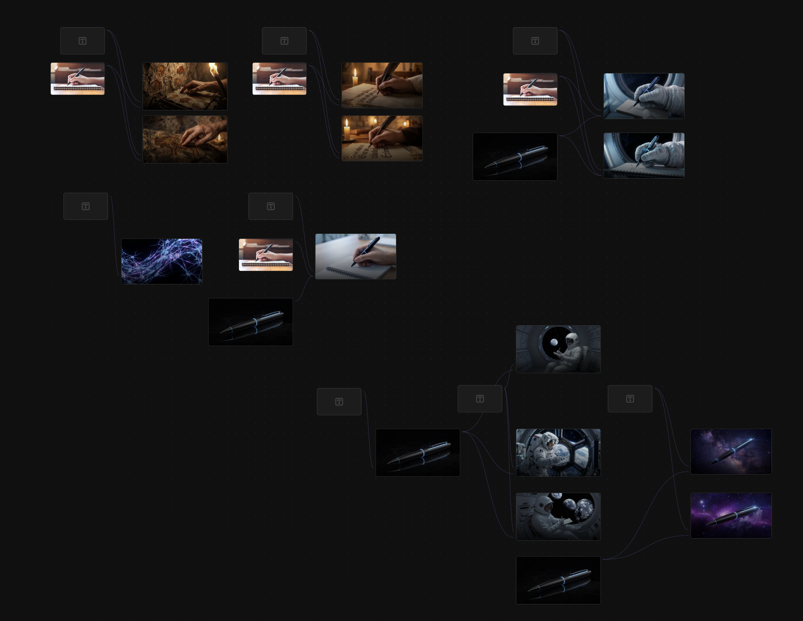
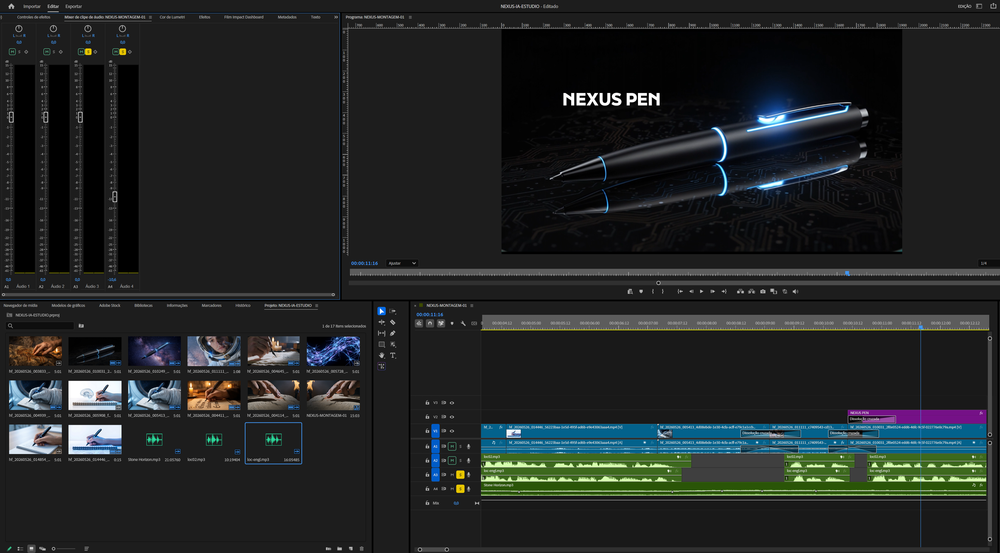

Notícia vira conceito de campanha
Ao ler uma reportagem da BBC sobre as redes neurais que são ativadas quando escrevemos, pensei em tornar isso o conceito da campanha de uma caneta fictícia, sendo que eu mesmo sou um escritor que usa cadernos e caneta ainda para minhas escritas.
Claude como parceiro criativo
Pedi para o Claude me ajudar na campanha e logo ele formatou para mim um roteiro e traçou um caminho para criação das imagens. Dei a ele as informações sobre quais Hubs de IA iria usar e ele começou a escrever os prompts direcionados.
Primeiras imagens no Magnific
Quando comecei a gerar as primeiras imagens no Magnific, vi que os modelos que o Claude havia me indicado não estavam funcionando da maneira que eu precisava (Kontext Pro e Mystic). Substitui o Mystic pelo Nana Banana 2 e dei continuidade. A primeira gerada foi da caneta para que pudesse ter uma referência visual de todo projeto até chegar ao final. As imagens iniciais foram geradas a partir apenas de prompt e uma referência de ângulo de câmera.

Pivô criativo e nova narrativa
Ao iniciar a montagem do quadro de roteiro visual, decidi mudar o conceito da campanha, não usando mais a história das redes neurais e simplificando para uma ferramenta que é usada desde o início da civilização e estará presente entre nós no futuro.
"Tudo ao redor mudou. [pausa 0.8s] Menos isso. [pausa 1.2s] Escrever é a base de tudo que o ser humano construiu. [silêncio 2s] Nexus Pen. [pausa 0.5s] O próximo capítulo de uma história de 40 mil anos."
Higgsfield + Suno + ElevenLabs
Indo para o Higgsfield, utilizei o modelo Kling para gerar os vídeos, com as imagens de referência. Algumas se mostraram muito plásticas e artificiais, me deixando a escolha de apenas fazer em prompts puros. Após isso, usei o Suno para trilha sonora e o ElevenLabs para locução.

Premiere — corte final
Após isso, usei minha ferramenta manual, finalmente. O Premiere me ajudou a juntar tudo e ajustar volume, transições e finalmente exportar o produto final.
